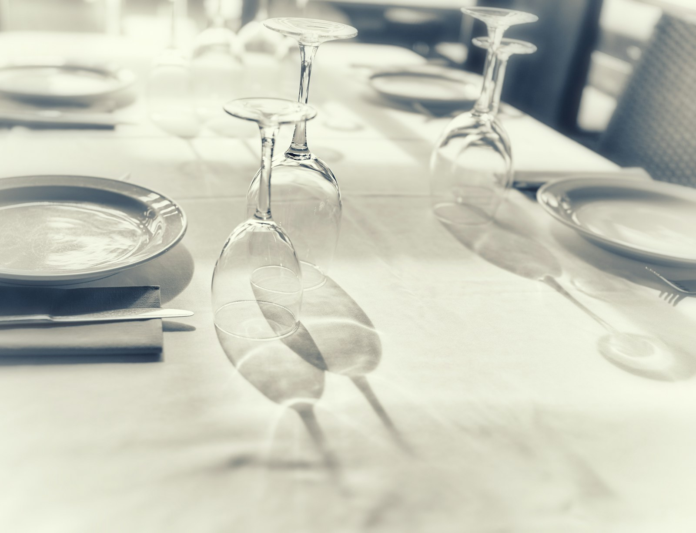
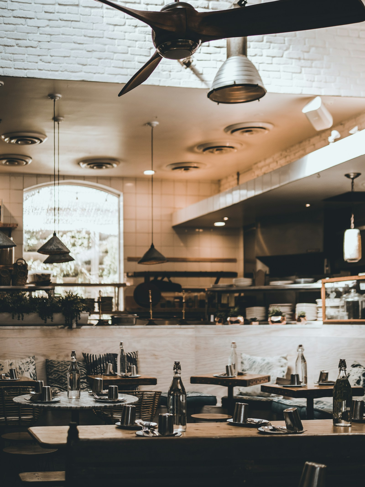
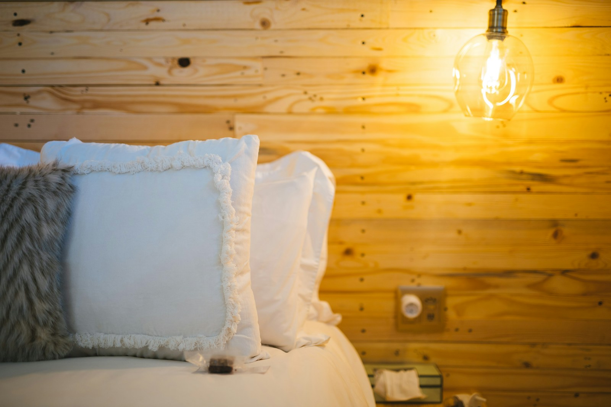
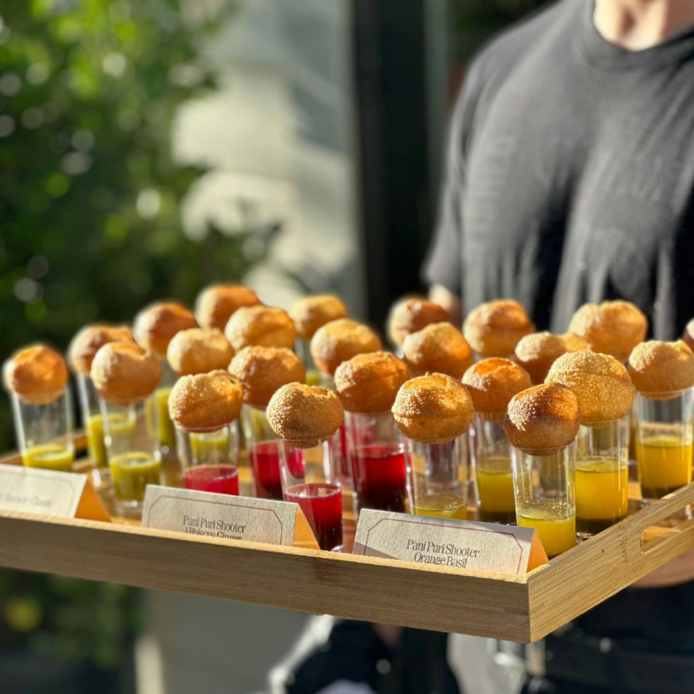

Genuss in Musterstadt
Restaurant
Fränkische Lieblingsgerichte, saisonale Zutaten und ein Platz zum Wohlfühlen: In unserer Gaststube genießen Sie ehrliche Küche, persönlich serviert. Auch Hunde sind bei uns willkommen.

Herzlich willkommen in Musterstadt
Genuss & Erholung – bei unserem Gastgeberteam
Persönlich. Fränkisch. Gastfreundlich.
Unser Gastgeberteam heißt Sie im Landgasthof herzlich willkommen.
Die Lindenhöhe ist ein Ort, an dem Menschen zusammenkommen. Wir möchten Ihnen nicht einfach nur ein gutes Essen servieren – wir möchten, dass Sie sich bei uns wohlfühlen, zur Ruhe kommen und gerne wiederkehren.
Frische, regionale Lebensmittel, ein verantwortungsvoller Umgang mit unserer Heimat und echte Freude am Gastgebersein: Das ist unser Versprechen an Sie.
Ihr Gastgeberteam

Genuss in Musterstadt
Fränkische Lieblingsgerichte, saisonale Zutaten und ein Platz zum Wohlfühlen: In unserer Gaststube genießen Sie ehrliche Küche, persönlich serviert. Auch Hunde sind bei uns willkommen.

Ankommen & bleiben
Behagliche Einzel-, Doppel- und Dreibettzimmer machen die Lindenhöhe zum ruhigen Zuhause auf Zeit – für Urlaub, Geschäftsreise oder die Nacht nach einer Feier.

Große Feste. Schöne Erinnerungen.
Hochzeit, Geburtstag, Familien-, Firmen- oder Weihnachtsfeier: In unserer Lindenhöhe planen wir große Feste persönlich mit Ihnen. Auf Wunsch bringen wir unsere Küche als Catering auch zu Ihrer Wunschlocation.
Regionale Zutaten und Gerichte, die nach Heimat schmecken.
Beim Lindenhöhe-Team sind Beratung und Gastfreundschaft Chefsache.
Vierbeiner sind in unserer gesamten Lindenhöhe willkommen – im Restaurant ebenso wie im Hotel.
Wir freuen uns auf Sie
Öffnungszeiten
Montag bis Samstag ab 16 Uhr
Sonntag ab 11:30 Uhr
Aktuelle Änderungen bitte telefonisch erfragen.